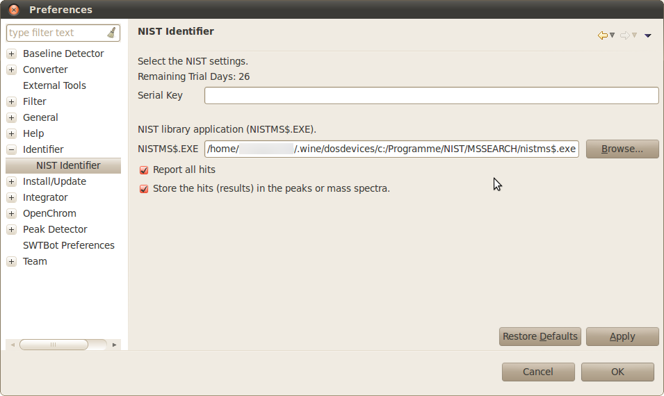
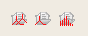
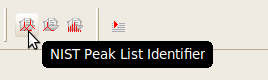
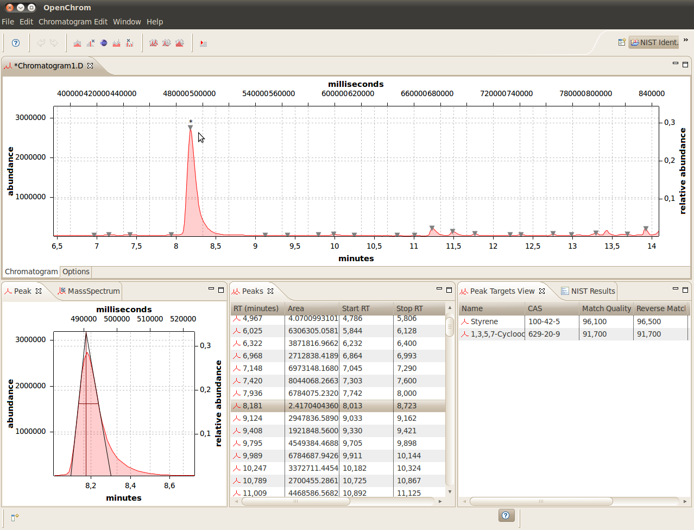
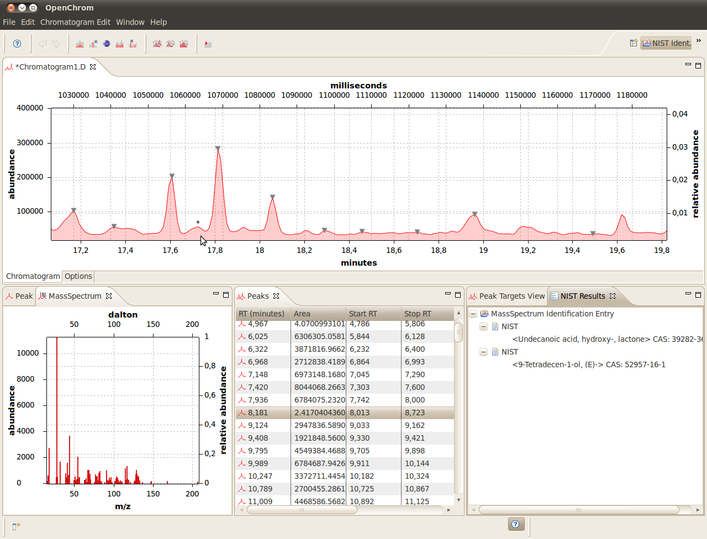

NIST-DB Identifier
Use the NIST-DB identifier to identify peaks and mass spectra using an installed version of the NIST-DB.
Set the path to the NIST.EXE:

If the host is a Linux/Unix or MAC OS X operating system, Wine can be used to install the NIST-DB application.
Detect peaks using OpenChrom and identify them:


Use "NIST Peak List Identifier" to identify all chromatogram peaks. The process could take a moment.
NIST Perspective:

Show the detected components for all peaks.

It's possible to identify selected mass spectra (*) too.